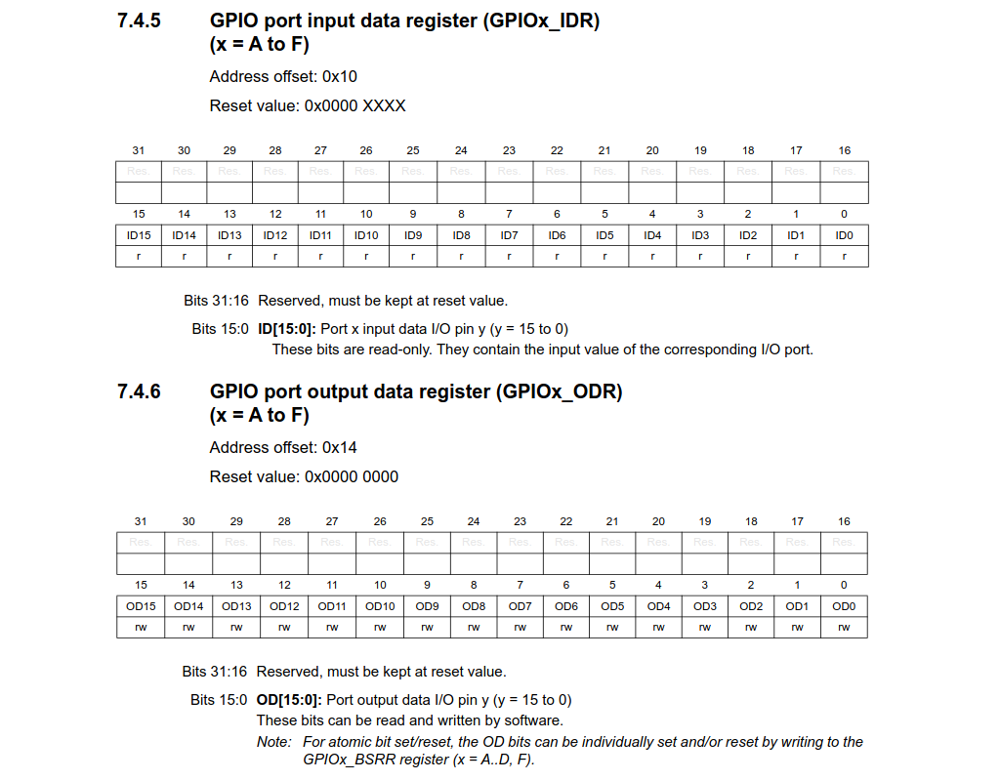

Back to tatiaart.github.io/Progress
Back to tatiaart.github.io/Progress
Back to tatiaart.github.io/Progress
Back to tatiaart.github.io/Progress
 Download this package
Download this packageTo further simplify program operation, we can omit Arduino’s config functions entirely and write more efficient code that doesn’t modify every pin’s configuration one by one…
We can skip/combine multiple steps of the pinMode() function. The first necessity for operating GPIO is enabling relevant port clocks.
Then, using the afforementioned GPIOx_MODER and GPIOx_PUPDR register, we configure the pin’s operating modes.
See code comments for the full description of the configuration sequence.
void setup() {
// To configure pins PA_13 and PA_14 as inputs with pullup resistors, and PA_11 and PA_12 as outputs:
// 1. No need to translate arduino to stm32 pins (we already know them - PORT_A, pins 11 - 14)
// 2. Enable the GPIO port A clock
RCC->IOPENR |= (1 << 0); // Set bit 0 of the RCC_IOPENR register, enabling port A clock.
// 3. No need to set port speed since the default value is adequate.
// 4. No need to handle alternative pin functions for this MCU
// 5. Write the configuration registers
GPIOA->MODER &= ~(0b11111010 << 2 * 11); // Write the calculated configuration
GPIOA->PUPDR &= ~(0b1111 << 2 * 13); // Reset bits 26 - 29, and set bit 26 and 28 of the GPIOA_PUPDR register,
GPIOA->PUPDR |= (0b0101 << 2 * 13); // setting pin PA_13 and PA_14's internal pullup mode to 01 (pull-up)
}
void loop() {
GPIO->ODR = (((GPIOA->IDR >> 13) & 0b11) << 11);
}
Note that multiple pins (e.g. PB_4 and PB_5) were configured with a single register access.
Arduino is just an abstraction layer, so despite not going through Arduino’s functions to configure the pins, we can still use Arduino’s Read/Write to access and modify the pins state.
Alas, Arduino’s digitalRead() and digitalWrite() are also complicated functions that have to, for example, perform translations from pin mappings, and can only access one pin’s state at a time.
To read and write GPIO pins it is sufficient to access the ports input and output data registers (IDR and ODR respectively):

./advanced_reading/advanced_reading.ino
void setup() {
RCC->IOPENR |= (11 << 1); // Set bits 1 and 2 of the RCC_IOPENR register, enabling port B and C clocks.
GPIOB->MODER &= ~(1111<<8); // Reset bits 8-11 of the GPIOB_MODER register, setting pin PB_4 and PB_5's mode to 00 (input)
GPIOB->PUPDR &= ~(1111<<8);
GPIOB->PUPDR |= (0101<<8); // Reset bits 8-11, and set bit 8 and 10 of the GPIOB_PUPDR register,
// setting pin PB_4 and PB_5's internal pullup mode to 01 (pull-up)
GPIOC->MODER &= ~(11<<12);
GPIOC->MODER |= (01<<12); // Reset bits 12-13, and set bit 12 of the GPIOC_MODER register,
// setting pin PC_6 (LED_BUILTIN) mode to output.
}
uint32_t portb_state;
void loop() {
portb_state = GPIOB->IDR; // portb_state now contains all of the port B pins' states
digitalWrite(PC_6, !(portb_state & (1<<4))); // Write the inverse of portb_state's bit 5 (the state of pin 5)
delay(500);
digitalWrite(PC_6, !(portb_state & (1<<5))); // Write the inverse of portb_state's bit 4 (the state of pin 4)
delay(500);
}
We read the whole register content at once, avoiding multiple repeated accesses to it that would be generated by multiple calls to digitalRead(). This has a big performance impact, and allows easy transfer of the port’s state as an integer value, which can then be bit-masked to read individual pins.
Then, we can simply replace digitalWrite() with direct manipulation of port C’s output data register.
./advanced_writing/advanced_writing.ino
void setup() {
RCC->IOPENR |= (11 << 1); // Set bits 1 and 2 of the RCC_IOPENR register, enabling port B and C clocks.
GPIOB->MODER &= ~(1111<<8); // Reset bits 8-11 of the GPIOB_MODER register, setting pin PB_4 and PB_5's mode to 00 (input)
GPIOB->PUPDR &= ~(1111<<8);
GPIOB->PUPDR |= (0101<<8); // Reset bits 8-11, and set bit 8 and 10 of the GPIOB_PUPDR register,
// setting pin PB_4 and PB_5's internal pullup mode to 01 (pull-up)
GPIOC->MODER &= ~(11<<12);
GPIOC->MODER |= (01<<12); // Reset bits 12-13, and set bit 12 of the GPIOC_MODER register,
// setting pin PC_6 (LED_BUILTIN) mode to output.
}
uint32_t portb_state;
void loop() {
portb_state = GPIOB->IDR; // portb_state now contains all of the port B pins' states
GPIOC->ODR = !(portb_state & (1<<4))? 1<<6 : 0; // If bit 4 of portb_state is not set, set bit 6 of GPIOC_ODR, else reset GPIOC_ODR
delay(500);
GPIOC->ODR = !(portb_state & (1<<5))? 1<<6 : 0; // If bit 5 of portb_state is not set, set bit 6 of GPIOC_ODR, else reset GPIOC_ODR
delay(500);
}